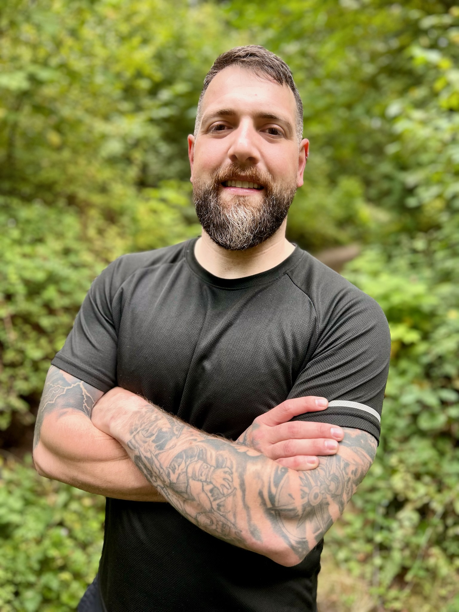

Adaptive & Functional Restoration
Specialized experience working with spinal cord injuries, Cerebral Palsy, MS, stroke recovery, and chronic joint limitations, helping clients reconnect with their bodies, build confidence, and restore independence.
The Movement Project / Meet Sheldon
Whether you're training for a mountain trek, trying to undo hours spent at a desk, or simply wanting to play with your kids without joint pain, you deserve to feel strong, capable, and pain-free in your own body.
Movement shouldn't feel scary, restrictive, or out of reach. When you lose the freedom to move effortlessly, you lose a piece of how you live. That's why The Movement Project exists: to help you move better, build confidence, and live life on your terms.

I've loved movement for as long as I can remember, from childhood sports to my time as an Eagle Scout and serving as a U.S. Navy Hospital Corpsman. But my journey hasn't been a straight line.
In 2013, I was overweight, struggling with anxiety, and hiding behind food and inactivity. When I finally decided to make a change, I lost 50 pounds, rediscovered my confidence, and fell in love with strength. Later, a severe knee injury sidelined me, forcing me to dive deep into movement science to figure out how to rebuild my body safely.
I know what it feels like to feel stuck, lose confidence, or fear that an old injury will keep you from doing what you love. I also know how transformational it is to pick yourself back up with the right support.
With a B.A. in Exercise Science, a Certified Strength and Conditioning Specialist (CSCS) certification, and over 8,000+ coaching hours, I've helped hundreds of people rebuild their relationship with movement at every level of human movement.
My background in healthcare and functional restoration has allowed me to work across a wide range of movement needs:
Specialized experience working with spinal cord injuries, Cerebral Palsy, MS, stroke recovery, and chronic joint limitations, helping clients reconnect with their bodies, build confidence, and restore independence.
Years of leading small groups and large classes, creating dynamic, motivating environments that inspire people to push safely beyond what they thought possible.
Root-cause movement programming designed to improve mobility, build real-world strength, and optimize joint health so your results in the gym carry over into daily life.
I will never ask you to do something I wouldn't do myself or don't truly believe you are capable of achieving.
We don't just exercise; we optimize how your body moves so your results carry over into daily life.
My goal is to equip you with the tools, strength, and confidence to realize you are far stronger than you think.
You don't have to navigate your fitness journey alone. Whether you're looking for a competitive edge, preparing for your next adventure, or simply want to get out of bed without pain and share life with the people that you love, I’ll be there every step of the way to ensure you have all the tools to succeed.
Welcome to The Movement Project,
Sheldon